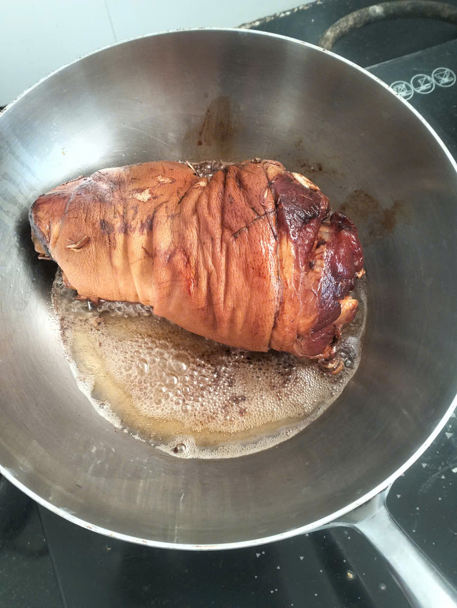
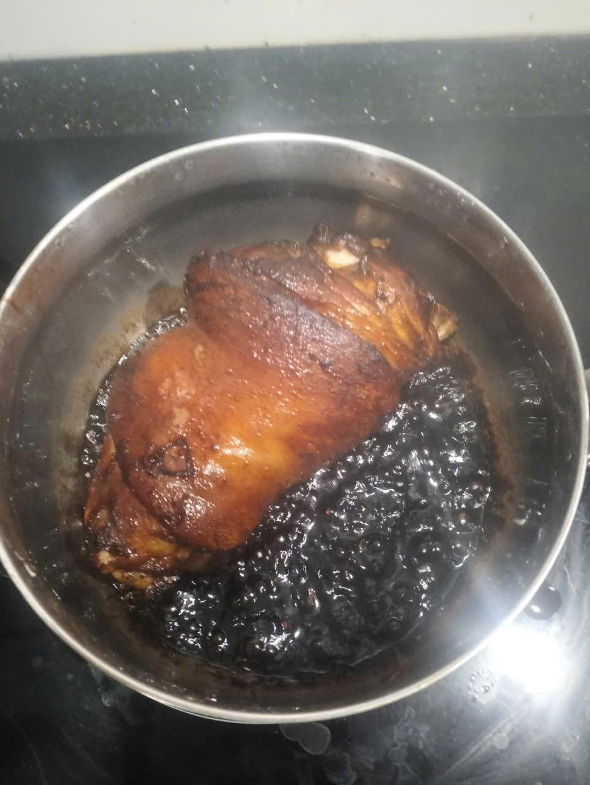
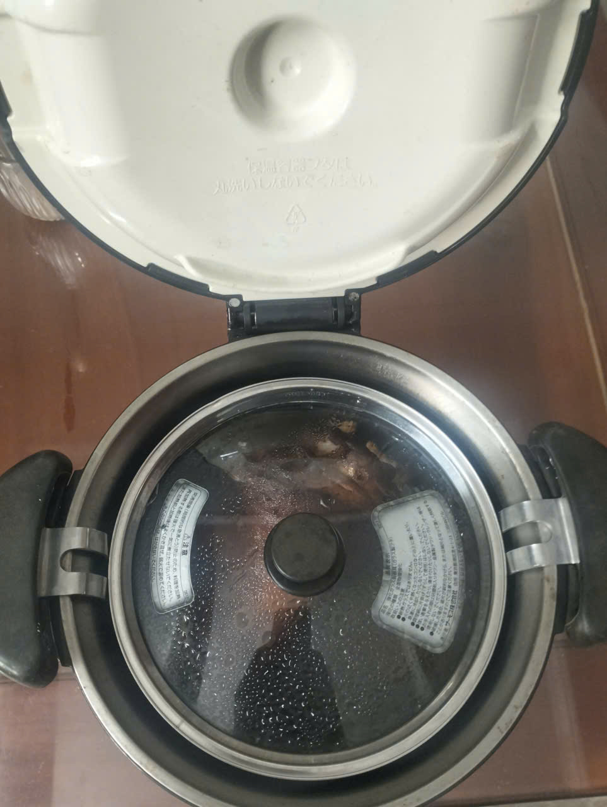

Chân Giò Hầm Rượu
1. Giới Thiệu Món Ăn
Nguồn gốc: Chân giò hầm rượu là món ăn ẩm thực truyền thống mang hương vị đậm đà, kết hợp giữa phong cách hầm nhừ Châu Á và mùi thơm nồng đặc trưng của rượu.
Tác dụng: Món ăn giúp bồi bổ cơ thể, làm ấm bụng, tăng cường lưu thông khí huyết và hỗ trợ phục hồi sức khỏe cho người mới ốm dậy hoặc người cần bổ sung năng lượng.
Chất dinh dưỡng cung cấp: Cung cấp lượng lớn Protein (chất đạm), Lipid (chất béo), Collagen dồi dào (tốt cho da và khớp), cùng các khoáng chất như Sắt, Kẽm và Canxi.
2. Nguyên Liệu Chuẩn Bị
- Chân giò heo (chọn phần tươi ngon, làm sạch)
- Xì dầu (nước tương)
- Nửa chén rượu (rượu nấu ăn hoặc rượu nếp thơm)
- Hành thịt (hành khô/hành tím)
- Đường phèn
- Các gia vị khác (tiêu, hạt nêm, muối...)
3. Các Bước Thực Hiện
Bước 1: Ướp chân giò
Chân giò sau khi sơ chế đem ướp đều với xì dầu và hành thịt cho ngấm gia vị.
Bước 2: Rán chắc chân giò
Cho chân giò vào chảo rán cho đến khi phần da và thịt săn lại, vàng đều các mặt. Lưu ý: Chỉ rán chắc phần chân giò, phần nước xì dầu ướp ban đầu trút riêng ra bát để cất lại dùng cho bước sau.

Bước 3: Đun với nước xì dầu và đường phèn
Cho chân giò đã rán vào nồi, đổ phần nước xì dầu cất lại ở bước 1 vào cùng nửa chén rượu và 1 ít đường phèn. Đun trên bếp cho đến khi khối thịt đủ nóng và ngấm đều gia vị.

Bước 4: Ủ chín mềm bằng nồi ủ
Sau khi đun chân giò đủ nóng trên bếp, nhấc nồi vào nồi ủ chuyên dụng. Đóng nắp và ủ trong khoảng 2 - 3 tiếng để chân giò tự chín nhừ, thấm vị rượu thơm nồng mà không làm tốn nhiên liệu.

Thành Phẩm Hoàn Thành
Sau thời gian ủ, mở nắp nồi bạn sẽ thu được món chân giò hầm rượu với màu cánh gián bắt mắt, thịt mềm nhừ tan trong miệng, da giòn béo ngậy quyện cùng hương thơm đặc trưng của rượu và đường phèn.